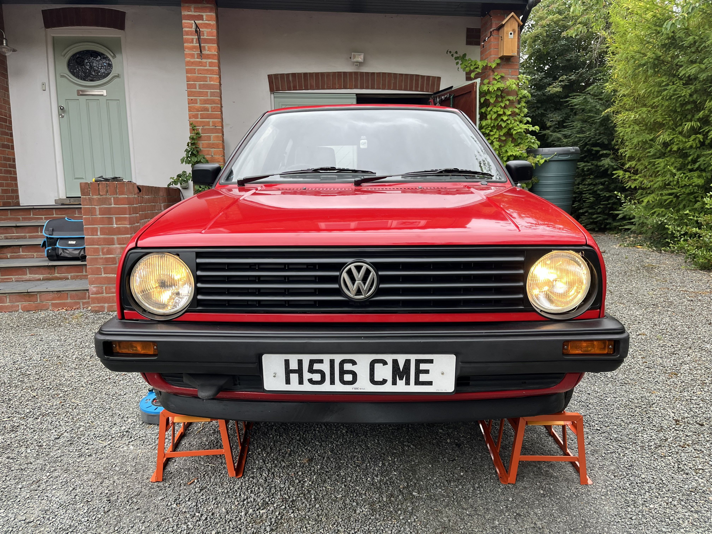
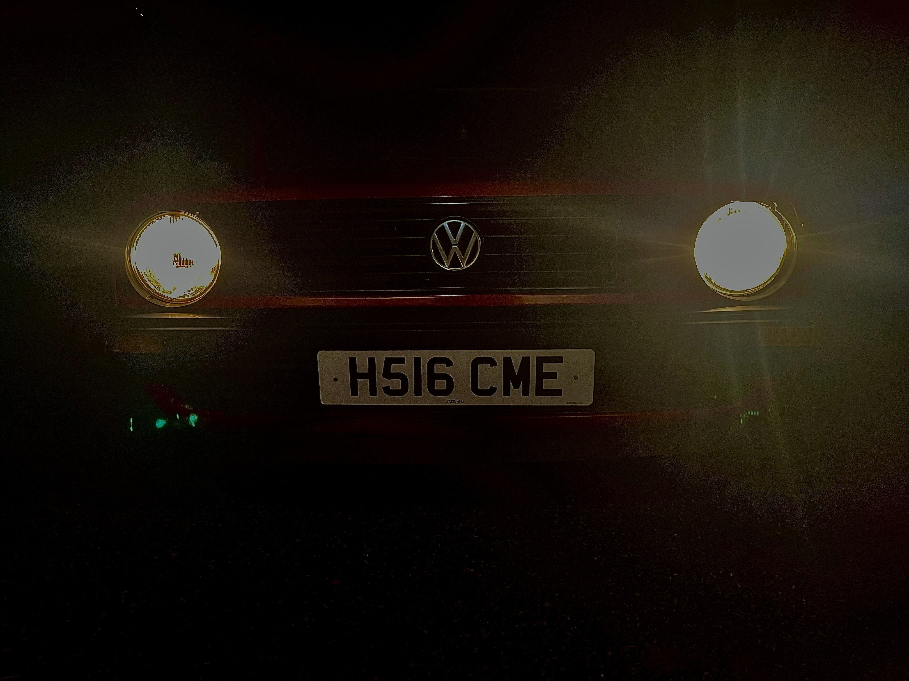
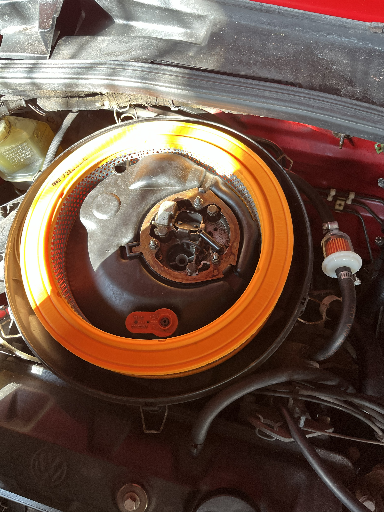
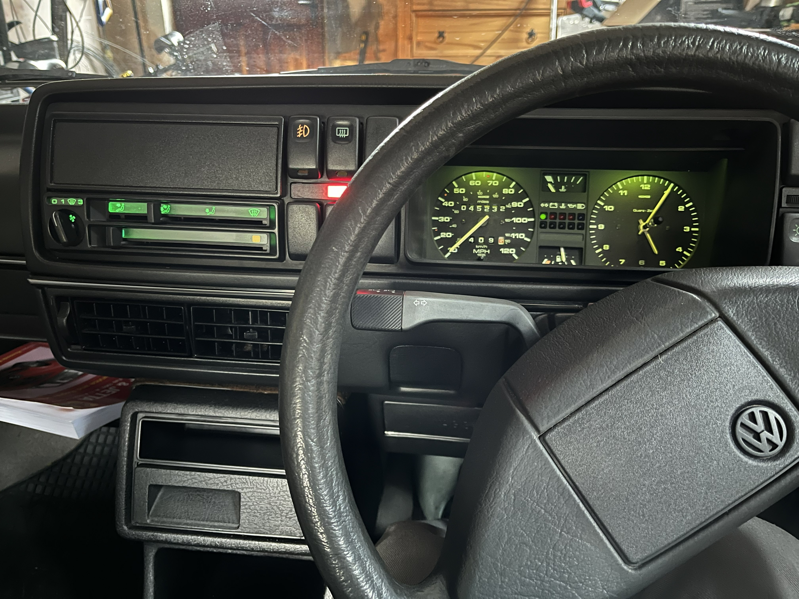

Golf Project

In June 2025 I bought my first car! A VW Mk2 Golf from 1991.
Since buying the car, I have been working on it to get it back to a good condition and make it my own. I have done bits and bobs to the car to keep it in a working order.
I plan to keep this car as original as possible, preserving its history.
So far I have replaced the filters on the car as it suffered a break down and i narrowed the problem down to the filters.
Over the winter, I put rust inhibitors in the car to prevent further corrosion.
Looking ahead, I plan to keep the car in good condition and do some light modifications to make it my own while keeping the original character of the car.
Gallery
Here are some more photos of the car and the work i have done on it:



